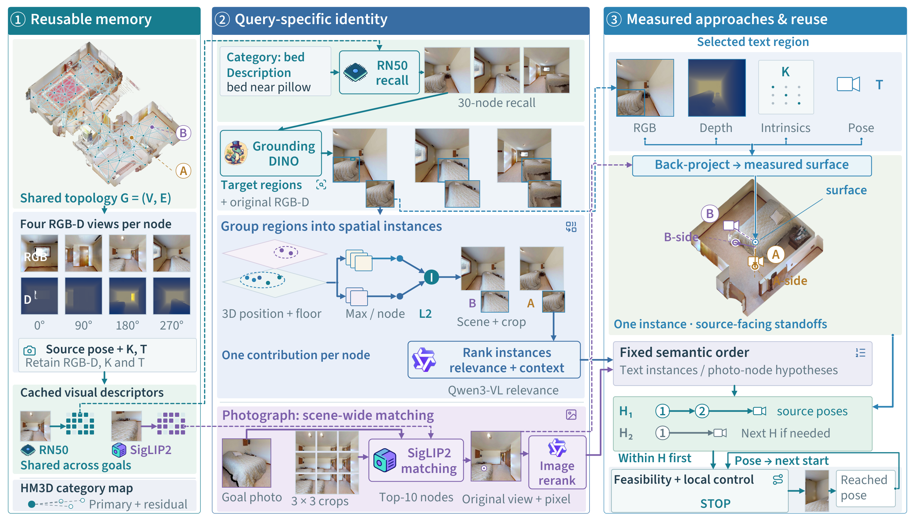
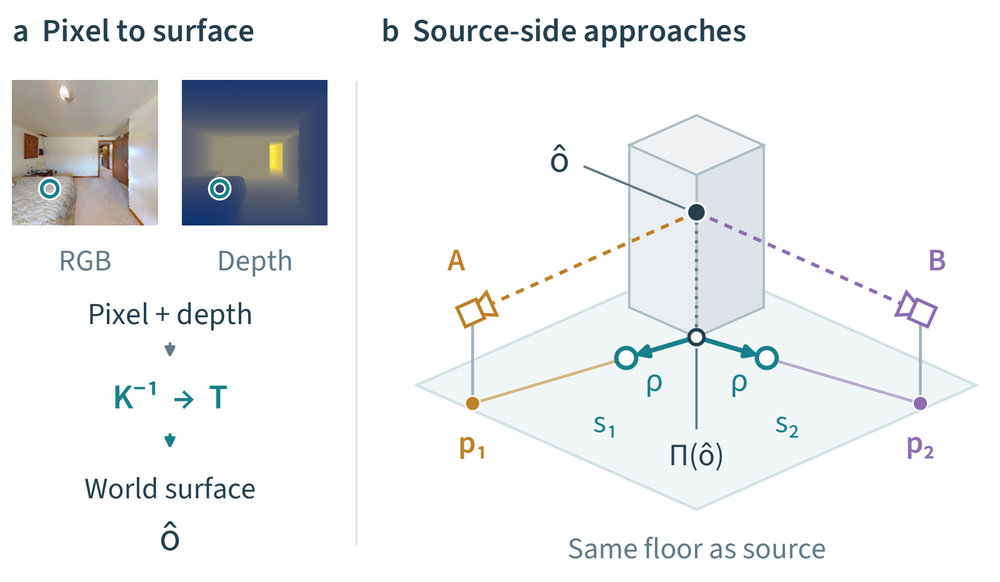
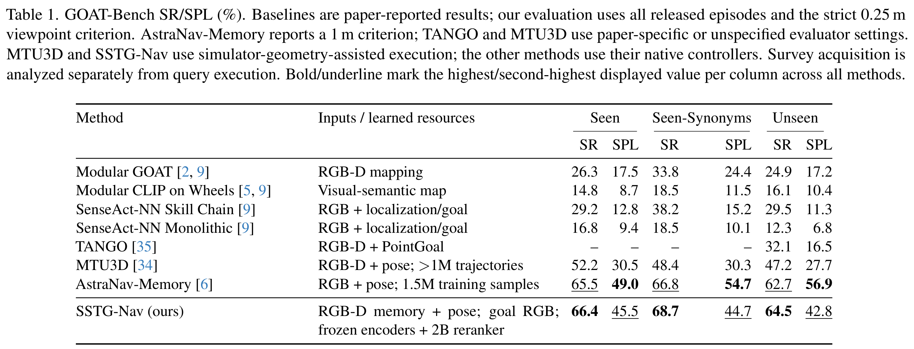
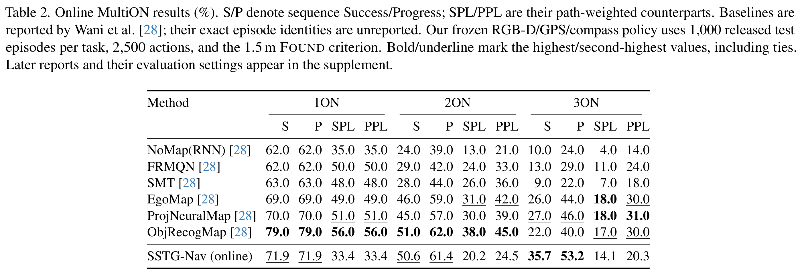
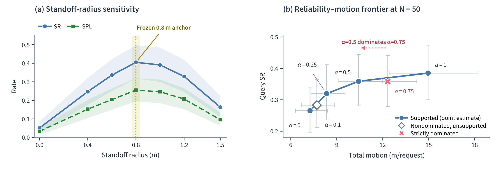
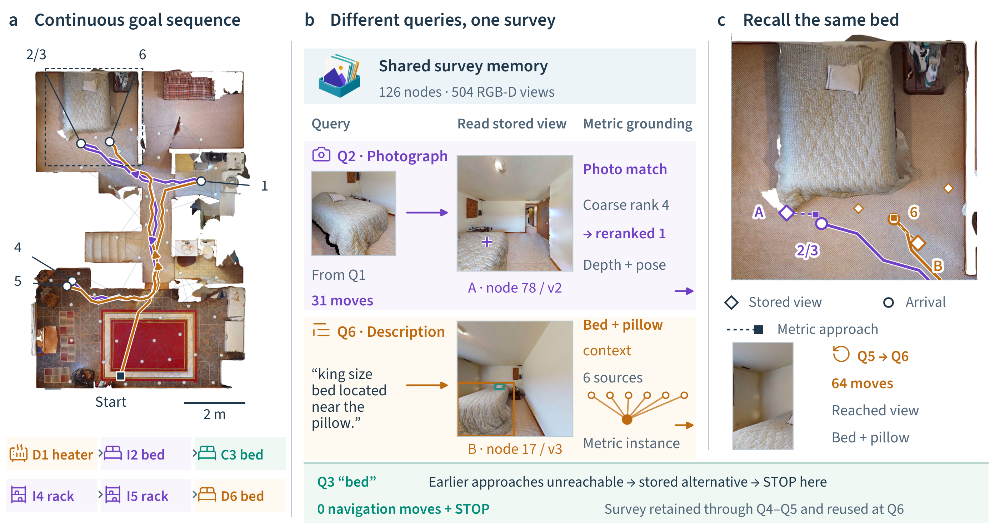
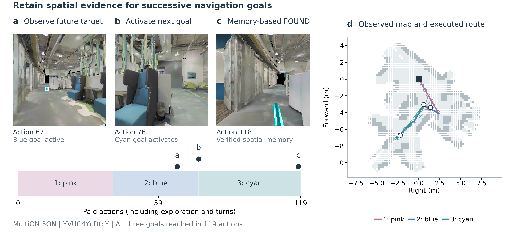
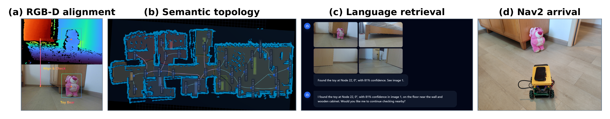

Turn one survey into a reusable navigation memory.
Recognizing a remembered object does not specify a reachable approach. SSTG-Nav links reusable instance evidence to measured approach locations, so different requests can share the same observations and geometry.

System overview. Category, description and photograph requests read shared calibrated observations. Query evidence orders instance hypotheses; depth and source poses supply their approaches. Execution preserves semantic priority, and each reached pose starts the next request.
Abstract
Robots operating in familiar environments should reuse prior observations for subsequent object navigation. SSTG-Nav couples reusable object identity with calibrated approach geometry. A goal-independent RGB-D survey retains observations and connectivity; category, description and photograph queries select instances, while depth and source poses provide ordered approaches. Source-aware consolidation compresses identity, and a linked residual bank retains alternative access geometry.
On GOAT-Bench, one shared survey supports successive multimodal requests and achieves 64.5% Unseen success under the strict 0.25 m criterion with navmesh-assisted execution. Matched HM3D studies isolate a 15.3-percentage-point success gain from metric standoffs. Online MultiON demonstrates reuse of observations acquired during navigation, and repeated-request studies quantify how survey costs are amortized.
01
Shared observations
Retain calibrated RGB-D views and connectivity for successive requests.
02
Identity with geometry
Select instances from query evidence and link them to source-facing approaches.
03
Reuse across goals
Keep alternative approaches and continue from the actual reached pose.
Method
From pixels to places the robot can reach.
Instance selection and approach construction share their source observations. Text and photograph requests use different evidence paths, then resolve to ordered metric approaches from the agent's current pose.
1
◎
Retain observations
A goal-independent survey stores calibrated RGB-D views, connectivity and cached visual descriptors.
2
⌖
Select instances
Text-region grounding and scene-wide photograph matching rank hypotheses using query-specific evidence.
Try feasible approaches within the fixed instance order. Retain observations as the next request starts at the reached pose.

Source-supported approach geometry. Back-projection locates a visible surface. Source-facing offsets produce approach candidates on the observed floor; navigable snapping precedes execution.
GOAT-Bench exampleShared survey
AB⌖CD
126
survey nodes
504
RGB-D views
6
successive goals
In the recorded case below, photograph, category and description requests reuse one survey. The schematic above represents linked observations and approaches.
Benchmark results
Reusable navigation across multimodal and online tasks.
GOAT-Bench tests requests over a shared survey. MultiON starts with empty memory and tests ordered goals using observations acquired along the way. The main comparisons below retain each benchmark's evaluation settings.
GOAT-Bench · Seen66.4%
SR · 45.5% SPL
GOAT-Bench · Seen-Synonyms68.7%
SR · 44.7% SPL
GOAT-Bench · Unseen64.5%
SR · 42.8% SPL

GOAT-Bench main comparison. All 1,060 released validation episodes; our runs use strict 0.25 m success and navmesh-assisted execution. Baselines are paper-reported: AstraNav-Memory reports 1 m, and controller/evaluator settings differ across methods.

Online MultiON. One frozen RGB-D/GPS/compass policy over 1,000 test episodes per task, with 2,500 actions and the released 1.5 m Found condition. Sequence Success is 71.9%, 50.6% and 35.7% for 1ON, 2ON and 3ON; the table compares the original MultiON reports.
Matched HM3D studies separate endpoint geometry, memory capacity and acquisition cost. With detections and rankings fixed, replacing an observation pose with a reachable standoff raises one-shot success by 15.3 percentage points.

Geometry and acquisition. Nearby 0.8–1.0 m offsets form a stable operating region under the official strict 0.1 m goal-region criterion. Across 50 requests, a half-survey captures 78% of the full survey's SR improvement over lazy acquisition with 41% of its additional motion. Intervals are scene-clustered 95% estimates.
93.4%candidate reduction through source-aware fusion
Compress identity, retain access diversity.
In the HM3D category-memory study, source-aware consolidation reduces the primary index from 20,107 detections to 1,329 entries. A linked residual bank keeps physically distinct approaches available after consolidation.
60.0%less serialized storage than the full raw bank
Preserve useful candidate coverage.
The budgeted bank retains 98.9% of full-bank oracle endpoint Recall@3: 0.627 versus 0.634. This measures the approach candidates preserved before arrival decisions; benchmark system performance is reported above.
Navigation in simulation
See the same memory serve successive requests.
GOAT-Bench demonstrates category, description, and photograph queries over a shared survey. MultiON shows the complementary online setting, where observations collected along the way become memory for later goals.
GOAT-Bench · Multimodal survey reuse
Different ways to ask. One spatial memory.
A photograph finds the bed, a category request reuses the reached pose, and a later description recalls the bed after intervening rack goals.

Different reads, the same bed. Q2 photograph matching promotes source A from rank 4 to 1. Q3 selects a stored alternative at the reached pose and stops with zero navigation moves. After Q4–Q5, Q6 uses bed–pillow context and six observation sources to select source B's measured approach and return to the bed. Diamonds mark stored views, squares metric destinations and circles actual arrivals.
Actual simulator actions re-execute the frozen semantic candidate plans with the benchmark's navmesh-assisted controller. Each action contributes one frame at 8 fps. The complete episode result matches the archived evaluation; this qualitative recording uses the strict 0.25 m success condition.
MultiON · Online memory
Watch observations become navigation memory.
Landmarks retained from earlier observations remain available when the next object becomes the current goal.

From observation to action. RGB-D observations support landmark memory and routes through explored free space. The map shows the policy's observed representation, alongside recorded views from an online MultiON episode.
Two qualitative examples from the earlier geometric controller illustrate online observation reuse. Each pairs the first-person view with the policy-observed map, played at 8 frames per second with one frame per action and a final observation.
HM3D mechanism examples
See why the destination representation matters.
These separate HM3D trajectories illustrate grounding and fusion. The paired sofa case holds the scene and target category fixed.
Same sceneSame sofa queryDifferent destination representation
Failure
A
Raw single candidate
An unsupported local hypothesis sends the agent to the wrong sofa instance.
fusion→
Success
B
Source-aware fused goal
Multi-view support selects a stable metric standoff and reaches the correct sofa.
Additional episodes
Successful navigation across object categories
First-person views from the released HM3D evaluation artifacts.
Success
ChairHM3D full validation · 7.4 s
Success
BedHM3D full validation · 3.3 s
Success
ToiletWide-FoV RGB-D audit · 3.8 s
Physical deployment
From stored observation to physical execution.
A Yahboom X3 running ROS 2/Nav2 connects calibrated RGB-D perception, persistent topology, language retrieval and physical navigation in a recorded qualitative demonstration.

Physical-system realization. Aligned RGB-D localizes an observed toy; the persistent topology stores its supporting views. A language request retrieves Node 22 and supplies a metric goal to Nav2, which executes the approach.
Open benchmark
Reproduce the reusable ObjectNav evaluation.
The public SSTG-Nav benchmark implementation covers calibrated RGB-D memory, source-aware instances, measured approaches and evaluation on GOAT-Bench, online MultiON and HM3D.
The complete robot-deployment and project-specific integration stack is not publicly released due to confidentiality obligations associated with the Huawei collaboration.
Public repository
DaojiePENG/ sstg-nav-bench
git clone https://github.com/ DaojiePENG/sstg-nav-bench.gitExplore the code ↗
Citation
Found SSTG-Nav useful?
Please cite the paper and link to the public benchmark.
BibTeX
@misc{peng2026sstgnavmetricgroundedspatialsemantictopological,
title = {SSTG-Nav: Metric-Grounded Spatial-Semantic
Topological Graphs for Reusable Object Navigation},
author = {Daojie Peng and Bingtao Wang and Jun Ma},
year = {2026},
eprint = {2608.00527},
archivePrefix = {arXiv},
primaryClass = {cs.RO},
url = {https://arxiv.org/abs/2608.00527}
}